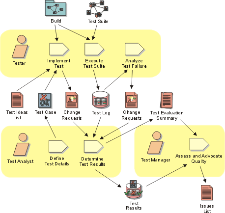

Disciplines >
Disciplines >
 Test >
Test >
 Workflow >
Validate Build Stability
Workflow >
Validate Build Stability
Disciplines >
Test >
Workflow >
Validate Build Stability
Workflow Detail:
|
Topics |
 |
The purpose of this workflow detail is to validate that the build is stable enough for detailed test and evaluation effort to begin. This work is also referred to as a smoke test, build verification test, build regression test, sanity check or acceptance into testing. This work helps to prevent the test resources being wasted on a futile and fruitless testing effort.
For each Build to be tested, this work is focused on:
The work is primarily centered around the Tester and Test Analyst roles. The most important skills required for this work include providing timely results, thoroughness and applying reasonable judgment to assessing the usefulness of the Build for further testing.
It is appropriate to allocate a subset of the test team to perform this work; the other team members ignore the new build until it is validated as stable, devoting their efforts instead to Workflow Detail: Improve Test Assets from the previous test cycle.
As a heuristic for relative resource allocation by phase, typical percentages
of test resource use for this workflow detail are: Inception — 00%, Elaboration
— 05%, Construction — 10% and Transition — 10%. Notice that it is
typical for there to be no formal Build in the Inception phase.
The sophistication and availability of test automation tools and the necessary prerequisite skills to use them will have an impact on the resourcing of this work. Where automation tools are used, much of this work can be performed fast and efficiently: without automation significantly more effort is required.
This work is potentially conducted once per Build—note however that it's typical not to test every Build. Once the Build is determined suitably stable, focus turns to Workflow Detail: Test and Evaluate. Where it is determined that the Build is sufficiently unsuitable to conduct further testing against, Test and Evaluation work typically recommences against a previous suitable Build.
Although somewhat dependent on the size of the development effort, we recommend that you should plan to automate appropriate aspects of this work. For automated elements of these "smoke" tests, it is typical to have them run unattended in otherwise "dead-time", such as during lunch or over night.
Note that in addition to executing automated "smoke" tests, you should also plan to conduct a minimal set of manual tests on new or significantly changed software items.
The following references provide more detail to help guide you in performing this work:
For further information about the underlying concepts behind this work:
|
Rational Unified
Process
|